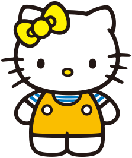

O Universo de Hello Kitty
Criada pela empresa japonesa Sanrio em 1974, Hello Kitty é uma das personagens mais famosas do mundo. Seu nome verdadeiro é Kitty White, e ela vive em Londres com sua família. Apesar de muita gente pensar que ela é apenas um gatinho, a própria Sanrio descreve a personagem como uma garotinha antropomórfica: gentil, educada e sempre disposta a ajudar os outros.
O universo de Hello Kitty vai muito além dela. Ao longo dos anos, diversos personagens foram criados, formando um mundo cheio de amizades, histórias simples e mensagens positivas sobre amizade, empatia e convivência.

A Família da Hello Kitty

Hello Kitty não está sozinha — sua família é parte importante das histórias.
Sua irmã gêmea, Mimmy White, é mais tímida e delicada. Enquanto Kitty usa um laço vermelho, Mimmy usa um amarelo, sendo essa a forma mais fácil de diferenciá-las. Apesar das diferenças, as duas são muito próximas e fazem quase tudo juntas.
Seus pais também aparecem em algumas histórias: George White (pai) e Mary White (mãe), que são carinhosos e sempre apoiam as filhas. A família representa um ambiente acolhedor e tradicional.

My Melody e o Mundo Docex
Uma das personagens mais queridas do universo Sanrio é My Melody. Ela é uma coelhinha doce e gentil que usa um capuz (geralmente rosa) e adora cozinhar, especialmente bolos e biscoitos.
My Melody vive na floresta de Mari Land e é conhecida por sua personalidade calma e bondosa. Suas histórias geralmente envolvem amizade e pequenos desafios do cotidiano.
Kuromi: A Rival Diferente
Em contraste com My Melody, temos Kuromi. Ela tem um estilo mais rebelde, usando um chapéu preto com uma caveira rosa. Apesar de parecer “malvada”, Kuromi na verdade é divertida, energética e até meio atrapalhada.
Ela costuma ser vista como rival de My Melody, mas no fundo, essa rivalidade é mais brincadeira do que algo sério.
Badtz-Maru: O Pinguim Rebelde
é um pinguim com uma personalidade forte e meio sarcástica. Ele não gosta muito de regras e prefere fazer as coisas do seu jeito.
Mesmo com esse jeitão rebelde, Badtz-Maru é um personagem muito popular, principalmente entre fãs que gostam de personagens mais “diferentões”.
Cinnamoroll e o Céu dos Sonhos
Cinnamoroll é um cachorrinho branco com orelhas grandes que parecem asas. Ele consegue voar e vive em uma cafeteria.
Cinnamoroll é extremamente gentil e tímido, sendo conhecido por ajudar os outros e fazer amigos facilmente. Suas histórias têm um tom mais calmo e sonhador.
Keroppi: O Sapo Alegre
Keroppi um sapinho cheio de energia que vive na Donut Pond. Ele adora aventuras, esportes e passar tempo com seus amigos.
Keroppi representa o espírito aventureiro e otimista, sendo sempre curioso e disposto a explorar o mundo ao seu redor.
Pochacco: O Atleta Amigável
Outro personagem muito querido é Pochacco. Ele é um cachorrinho esportista que adora correr e praticar atividades físicas.
Mesmo sendo ativo e competitivo, Pochacco é extremamente gentil e valoriza a amizade acima de tudo.
Little Twin Stars: Kiki e Lala
Os Little Twin Stars são os irmãos Kiki e Lala, que vieram do espaço. Eles vivem em um mundo mágico cheio de estrelas e sonhos.
Kiki é mais curioso e energético, enquanto Lala é mais calma e artística. Juntos, eles representam o equilíbrio entre imaginação e delicadeza.
Um Universo Baseado na Amizade
O universo de Hello Kitty é simples, mas extremamente marcante. Cada personagem tem sua própria personalidade, gostos e jeito de ver o mundo, o que permite que diferentes pessoas se identifiquem com eles.
Mais do que histórias complexas, a Sanrio construiu um mundo focado em valores positivos como amizade, respeito, gentileza e colaboração. É isso que faz com que Hello Kitty e seus amigos continuem sendo tão populares mesmo depois de décadas.